vignettes/ACM_classif.Rmd
ACM_classif.RmdBibliothèques utiles à l’éxécution du programme
## -- Attaching packages --------------------------------------- tidyverse 1.3.0 --## v ggplot2 3.3.2 v purrr 0.3.4
## v tibble 3.0.4 v dplyr 1.0.2
## v tidyr 1.1.2 v stringr 1.4.0
## v readr 1.4.0 v forcats 0.5.0## -- Conflicts ------------------------------------------ tidyverse_conflicts() --
## x dplyr::filter() masks stats::filter()
## x dplyr::lag() masks stats::lag()## Warning: le package 'dbplyr' a été compilé avec la version R 4.0.3##
## Attachement du package : 'dbplyr'## The following objects are masked from 'package:dplyr':
##
## ident, sql
library(FactoMineR) # pour les ACM## Warning: le package 'FactoMineR' a été compilé avec la version R 4.0.3## Warning: le package 'mclust' a été compilé avec la version R 4.0.3## Package 'mclust' version 5.4.7
## Type 'citation("mclust")' for citing this R package in publications.##
## Attachement du package : 'mclust'## The following object is masked from 'package:purrr':
##
## map## Warning: le package 'klaR' a été compilé avec la version R 4.0.4## Le chargement a nécessité le package : MASS##
## Attachement du package : 'MASS'## The following object is masked from 'package:dplyr':
##
## select##
## Attachement du package : 'ACC'## The following object is masked from 'package:tidyr':
##
## populationPréparation de la base de travail
data("population", package = "ACC")
accidents2 <- mutate_pour_modele(accidents, population)## Joining, by = "dep"
# Suppression des variables d'identifiants et les variables quantitatives
base <- accidents2 %>%
dplyr::select(-Num_Acc)
# résumé de la base
summary(base)## catu grav sexe secu1
## Length:480116 Length:480116 Length:480116 Length:480116
## Class :character Class :character Class :character Class :character
## Mode :character Mode :character Mode :character Mode :character
##
##
##
##
## catv lum agg atm
## Length:480116 Length:480116 Length:480116 Length:480116
## Class :character Class :character Class :character Class :character
## Mode :character Mode :character Mode :character Mode :character
##
##
##
##
## col intersection mois_acc jour_acc
## Length:480116 Length:480116 juin : 45582 dimanche:58858
## Class :character Class :character octobre : 44628 lundi :64026
## Mode :character Mode :character juillet : 43731 mardi :68570
## septembre: 43429 mercredi:68885
## novembre : 41484 jeudi :70085
## mai : 41192 vendredi:79923
## (Other) :220070 samedi :69769
## catr circ prof plan
## Length:480116 Length:480116 Length:480116 Length:480116
## Class :character Class :character Class :character Class :character
## Mode :character Mode :character Mode :character Mode :character
##
##
##
##
## surf infra situ gr_dep
## Length:480116 Length:480116 Length:480116 Length:480116
## Class :character Class :character Class :character Class :character
## Mode :character Mode :character Mode :character Mode :character
##
##
##
##
## classe_age cl_heure
## Length:480116 Length:480116
## Class :character Class :character
## Mode :character Mode :character
##
##
##
##
names(base)## [1] "catu" "grav" "sexe" "secu1" "catv"
## [6] "lum" "agg" "atm" "col" "intersection"
## [11] "mois_acc" "jour_acc" "catr" "circ" "prof"
## [16] "plan" "surf" "infra" "situ" "gr_dep"
## [21] "classe_age" "cl_heure"Dans cette première ACM, on intègre toutes les variables qualitatives.
res.mca <- MCA(base,
level.ventil = 0.025)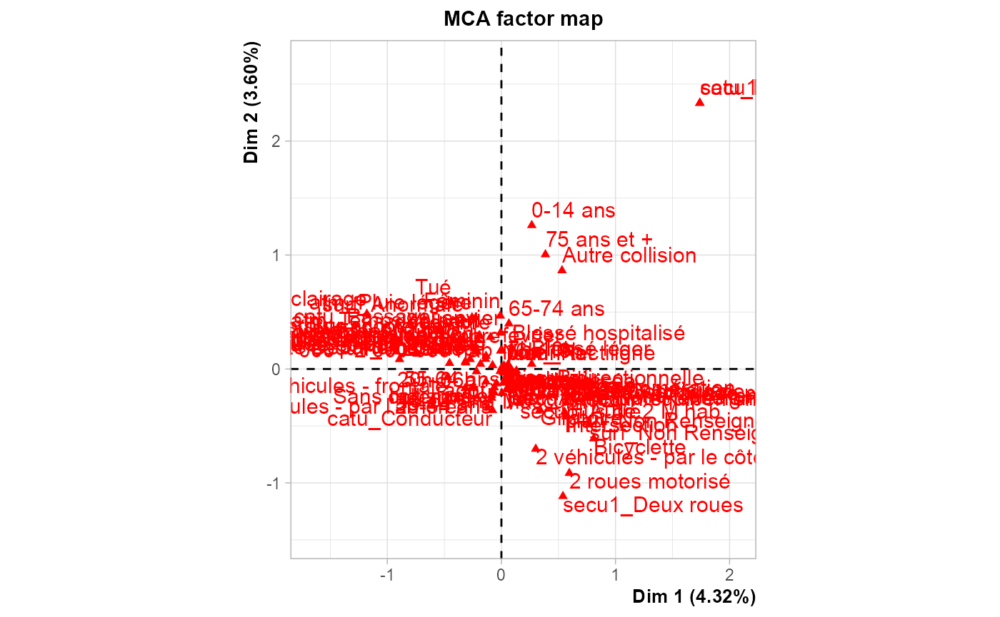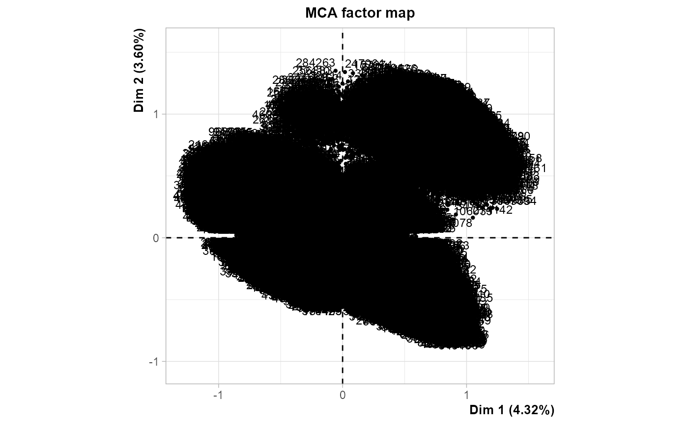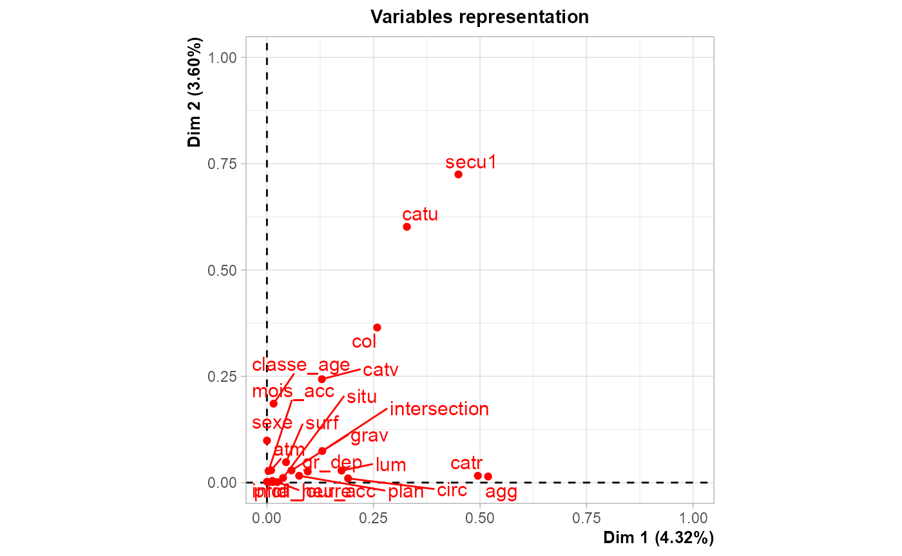
# toutes les modalités représentant moins de 2.5 % sont ventilées aléatoirement dans les autres modalités (les tués représentent 2,7 % des accidents, d'où le filtre à 2,5 % car on veut garder la modalité "tué")
# Tableau avec les poids des axes
res.mca$eig[,2]## dim 1 dim 2 dim 3 dim 4 dim 5 dim 6
## 4.318616e+00 3.601715e+00 3.244568e+00 2.972010e+00 2.922718e+00 2.626234e+00
## dim 7 dim 8 dim 9 dim 10 dim 11 dim 12
## 2.331000e+00 2.014613e+00 1.857868e+00 1.760272e+00 1.741860e+00 1.624420e+00
## dim 13 dim 14 dim 15 dim 16 dim 17 dim 18
## 1.616582e+00 1.525579e+00 1.508333e+00 1.479836e+00 1.474350e+00 1.463187e+00
## dim 19 dim 20 dim 21 dim 22 dim 23 dim 24
## 1.443125e+00 1.439040e+00 1.435229e+00 1.430837e+00 1.427273e+00 1.421245e+00
## dim 25 dim 26 dim 27 dim 28 dim 29 dim 30
## 1.416100e+00 1.414086e+00 1.413035e+00 1.410491e+00 1.409507e+00 1.404989e+00
## dim 31 dim 32 dim 33 dim 34 dim 35 dim 36
## 1.404419e+00 1.402536e+00 1.400202e+00 1.394526e+00 1.389885e+00 1.387128e+00
## dim 37 dim 38 dim 39 dim 40 dim 41 dim 42
## 1.380528e+00 1.376336e+00 1.373153e+00 1.359996e+00 1.351782e+00 1.349345e+00
## dim 43 dim 44 dim 45 dim 46 dim 47 dim 48
## 1.327157e+00 1.311568e+00 1.300226e+00 1.258049e+00 1.255539e+00 1.222089e+00
## dim 49 dim 50 dim 51 dim 52 dim 53 dim 54
## 1.200095e+00 1.167241e+00 1.158280e+00 1.149588e+00 1.140026e+00 1.101509e+00
## dim 55 dim 56 dim 57 dim 58 dim 59 dim 60
## 1.055506e+00 1.019171e+00 9.870149e-01 9.737590e-01 9.406940e-01 8.783171e-01
## dim 61 dim 62 dim 63 dim 64 dim 65 dim 66
## 8.573658e-01 7.934586e-01 7.634384e-01 7.166634e-01 6.787786e-01 6.602232e-01
## dim 67 dim 68 dim 69 dim 70 dim 71
## 4.502104e-01 4.108796e-01 3.232670e-01 1.813306e-01 1.838351e-23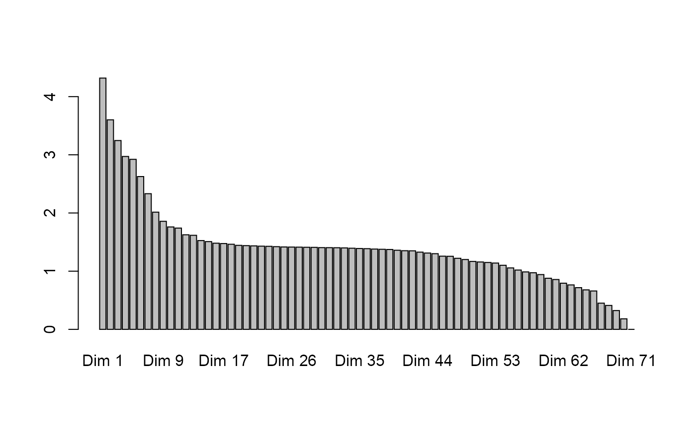
Au vu du coude, on ne garderait que 7 axes. Toutefois, cela représente assez peu (22 %), ce qui est normal en ACM.
plot(res.mca, invisible = "var",
title = "Représentation des individus selon les 2 premiers axes de l'ACM")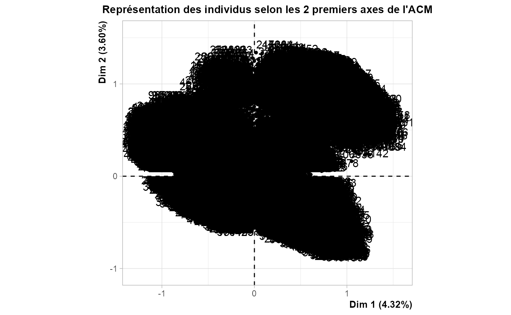
Vu le nombre d’individus, aucun intérêt car pas lisible.
plot(res.mca, invisible = "ind",
title = "Représentation des modalités selon les 2 premiers axes de l'ACM")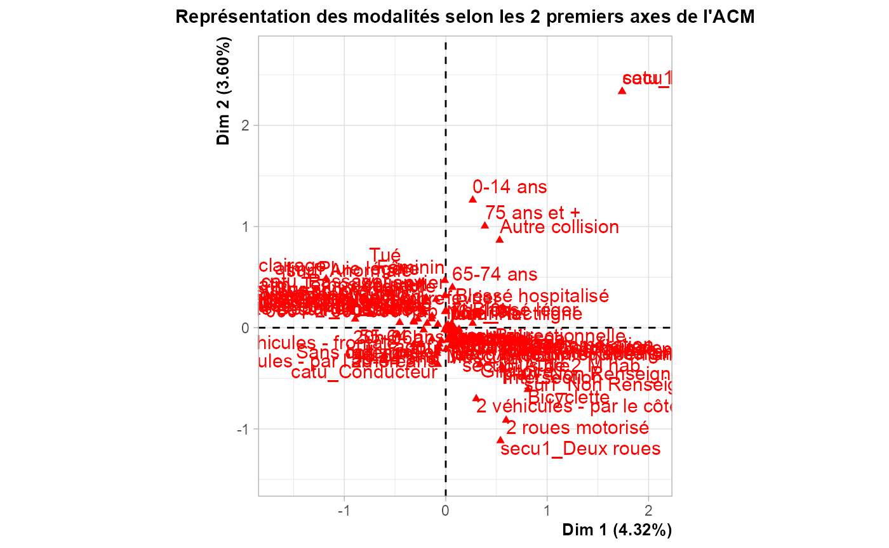 Même constat que pour le graphique précédent, trop de modalités et peu lisible.
summary(res.mca, nbelements=2, # nombre d'individus
ncp=5, # nombre de dimensions
nb.dec=2) ##
## Call:
## MCA(X = base, level.ventil = 0.025)
##
##
## Eigenvalues
## Dim.1 Dim.2 Dim.3 Dim.4 Dim.5 Dim.6 Dim.7 Dim.8
## Variance 0.14 0.12 0.10 0.10 0.09 0.08 0.08 0.07
## % of var. 4.32 3.60 3.24 2.97 2.92 2.63 2.33 2.01
## Cumulative % of var. 4.32 7.92 11.16 14.14 17.06 19.69 22.02 24.03
## Dim.9 Dim.10 Dim.11 Dim.12 Dim.13 Dim.14 Dim.15 Dim.16
## Variance 0.06 0.06 0.06 0.05 0.05 0.05 0.05 0.05
## % of var. 1.86 1.76 1.74 1.62 1.62 1.53 1.51 1.48
## Cumulative % of var. 25.89 27.65 29.39 31.02 32.63 34.16 35.67 37.15
## Dim.17 Dim.18 Dim.19 Dim.20 Dim.21 Dim.22 Dim.23 Dim.24
## Variance 0.05 0.05 0.05 0.05 0.05 0.05 0.05 0.05
## % of var. 1.47 1.46 1.44 1.44 1.44 1.43 1.43 1.42
## Cumulative % of var. 38.62 40.08 41.53 42.97 44.40 45.83 47.26 48.68
## Dim.25 Dim.26 Dim.27 Dim.28 Dim.29 Dim.30 Dim.31 Dim.32
## Variance 0.05 0.05 0.05 0.05 0.05 0.05 0.05 0.05
## % of var. 1.42 1.41 1.41 1.41 1.41 1.40 1.40 1.40
## Cumulative % of var. 50.10 51.51 52.92 54.33 55.74 57.15 58.55 59.96
## Dim.33 Dim.34 Dim.35 Dim.36 Dim.37 Dim.38 Dim.39 Dim.40
## Variance 0.05 0.05 0.04 0.04 0.04 0.04 0.04 0.04
## % of var. 1.40 1.39 1.39 1.39 1.38 1.38 1.37 1.36
## Cumulative % of var. 61.36 62.75 64.14 65.53 66.91 68.28 69.66 71.02
## Dim.41 Dim.42 Dim.43 Dim.44 Dim.45 Dim.46 Dim.47 Dim.48
## Variance 0.04 0.04 0.04 0.04 0.04 0.04 0.04 0.04
## % of var. 1.35 1.35 1.33 1.31 1.30 1.26 1.26 1.22
## Cumulative % of var. 72.37 73.72 75.05 76.36 77.66 78.92 80.17 81.39
## Dim.49 Dim.50 Dim.51 Dim.52 Dim.53 Dim.54 Dim.55 Dim.56
## Variance 0.04 0.04 0.04 0.04 0.04 0.04 0.03 0.03
## % of var. 1.20 1.17 1.16 1.15 1.14 1.10 1.06 1.02
## Cumulative % of var. 82.59 83.76 84.92 86.07 87.21 88.31 89.37 90.38
## Dim.57 Dim.58 Dim.59 Dim.60 Dim.61 Dim.62 Dim.63 Dim.64
## Variance 0.03 0.03 0.03 0.03 0.03 0.03 0.02 0.02
## % of var. 0.99 0.97 0.94 0.88 0.86 0.79 0.76 0.72
## Cumulative % of var. 91.37 92.35 93.29 94.16 95.02 95.82 96.58 97.30
## Dim.65 Dim.66 Dim.67 Dim.68 Dim.69 Dim.70 Dim.71
## Variance 0.02 0.02 0.01 0.01 0.01 0.01 0.00
## % of var. 0.68 0.66 0.45 0.41 0.32 0.18 0.00
## Cumulative % of var. 97.97 98.63 99.08 99.50 99.82 100.00 100.00
##
## Individuals (the 2 first)
## Dim.1 ctr cos2 Dim.2 ctr cos2 Dim.3 ctr cos2
## 1 | -0.10 0.00 0.00 | 0.08 0.00 0.00 | 0.30 0.00 0.03 |
## 2 | -0.19 0.00 0.01 | -0.11 0.00 0.00 | 0.06 0.00 0.00 |
## Dim.4 ctr cos2 Dim.5 ctr cos2
## 1 -0.41 0.00 0.05 | -0.10 0.00 0.00 |
## 2 -0.35 0.00 0.05 | -0.01 0.00 0.00 |
##
## Categories (the 2 first)
## Dim.1 ctr cos2 v.test Dim.2 ctr cos2
## catu_Conducteur | -0.08 0.15 0.02 -90.22 | -0.36 3.77 0.36
## catu_Passager | -0.55 1.77 0.07 -177.61 | 0.33 0.75 0.02
## v.test Dim.3 ctr cos2 v.test Dim.4 ctr
## catu_Conducteur -418.07 | -0.09 0.24 0.02 -99.98 | -0.01 0.00
## catu_Passager 105.72 | 0.30 0.69 0.02 96.14 | 0.00 0.00
## cos2 v.test Dim.5 ctr cos2 v.test
## catu_Conducteur 0.00 -10.17 | 0.00 0.00 0.00 3.36 |
## catu_Passager 0.00 -0.71 | 0.18 0.28 0.01 57.99 |
##
## Categorical variables (eta2)
## Dim.1 Dim.2 Dim.3 Dim.4 Dim.5
## catu | 0.33 0.60 0.02 0.00 0.02 |
## grav | 0.06 0.03 0.38 0.06 0.06 |Dans cette 2e ACM, on étudie le fait d’être Indemne/Blessé selon les données démographiques des victimes (age, sexe, catégorie d’usagers).
# rq : on ne garde que les variables démographiques (sexe, age, catégorie d'usagers) et les autres sont passées en illustratives
res2.mca <- MCA(base, quali.sup = c(4:20,22), level.ventil = 0)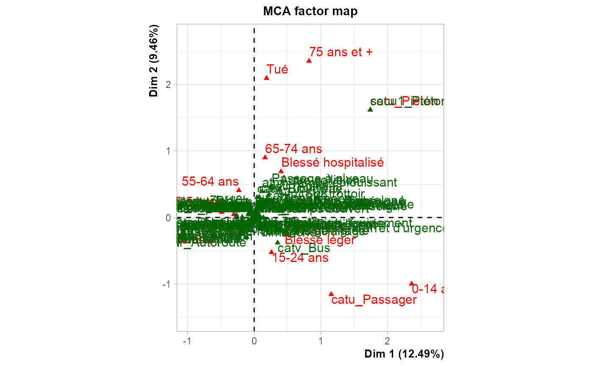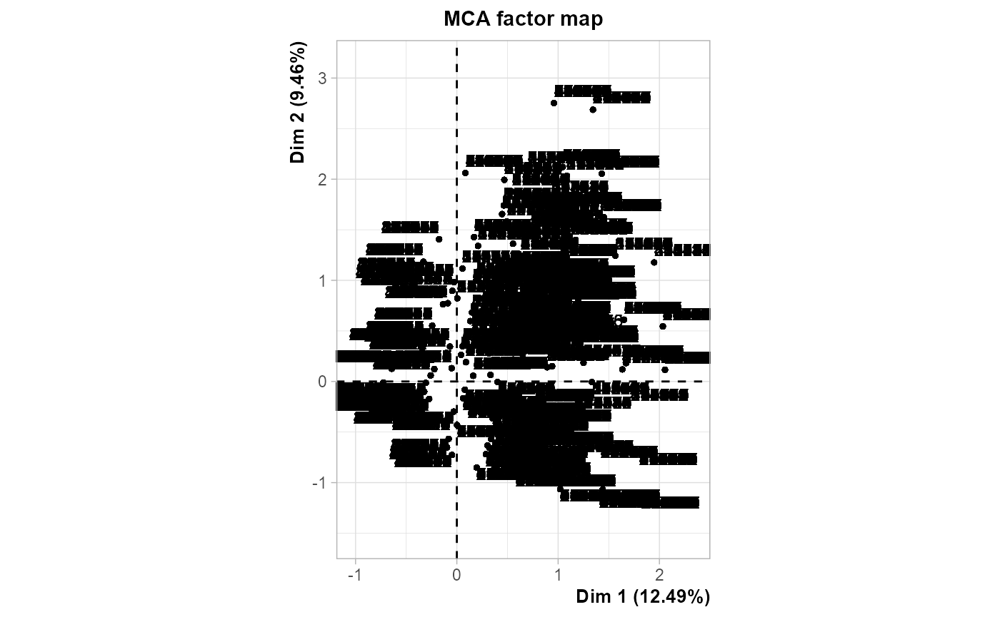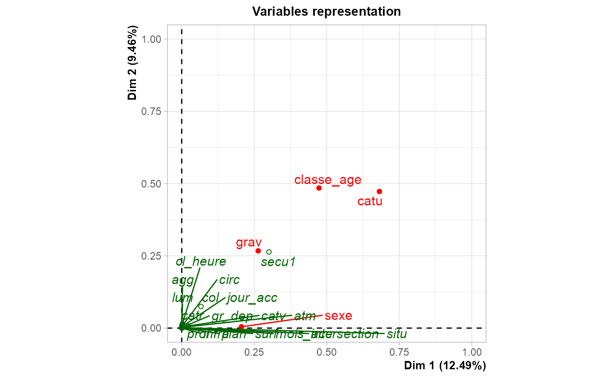
# Tableau avec les poids
res2.mca$eig[,2]## dim 1 dim 2 dim 3 dim 4 dim 5 dim 6 dim 7 dim 8
## 12.494743 9.455093 8.112075 7.871608 7.859098 7.703450 7.692308 7.686830
## dim 9 dim 10 dim 11 dim 12 dim 13
## 7.556638 7.428045 6.499929 5.547357 4.092826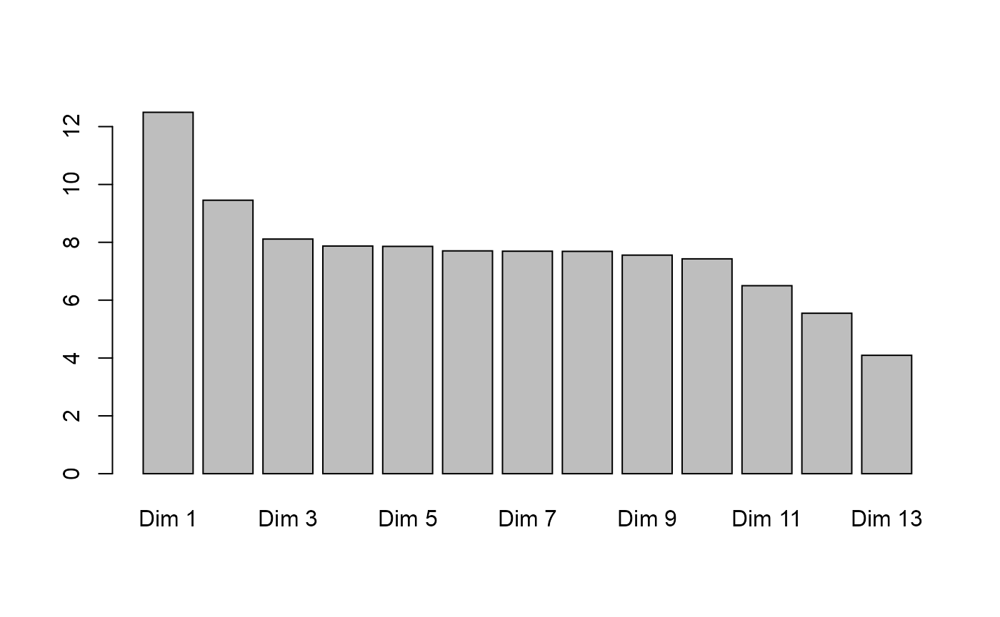
Au vu du graph, on peut garder 2 axes, qui explique 22 %.
plot(res2.mca, invisible = c("var","quali.sup"),
title = "Représentation des individus selon les 2 premiers axes de l'ACM")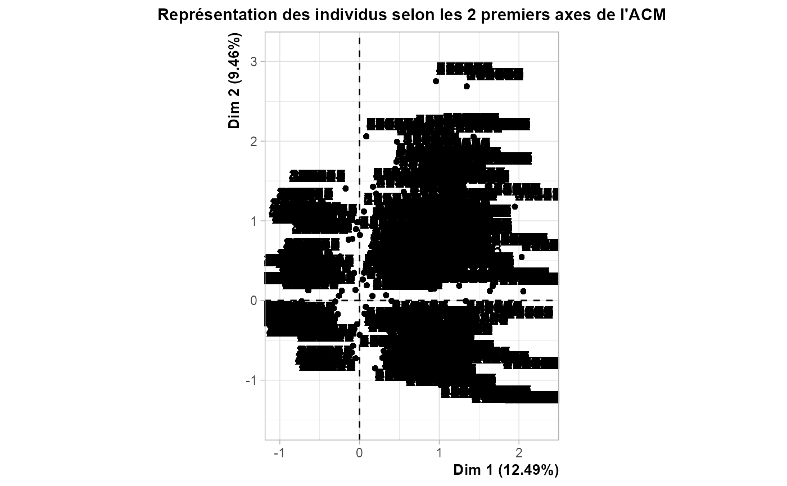
Vu le nombre d’individus, peu d’intérêt car pas lisible.
plot(res2.mca, invisible = c("var","quali.sup"),
habillage = "grav",
title = "Représentation des individus selon les modalités de la variable gravité")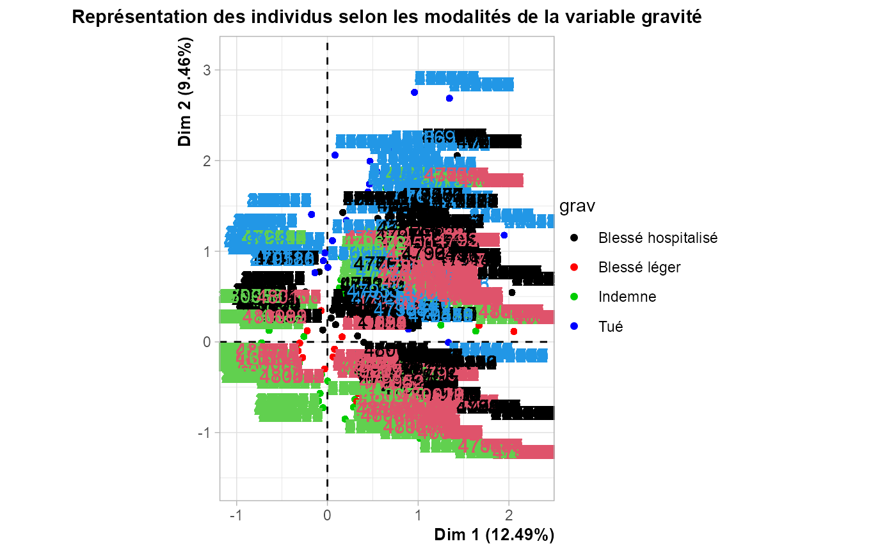
Sur l’axe 2, les personnes idemnes (en bas) se détachent des personnes tuées (en haut)
plot(res2.mca, invisible = c("var","quali.sup"),
habillage = "catu",
title = "Représentation des individus selon la catégorie d'usager")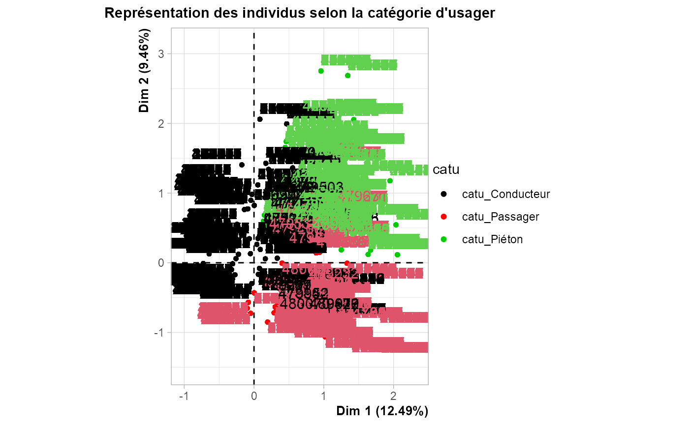
Selon l’axe 2, on peut observer qu’un groupe “passager” se détache vers le bas (personnes indemnes), par oppoistion au groupe “piétons” vers le haut (personnes tuées)
plot(res2.mca, invisible = "ind",
title = "Représentation des modalités actives (rouge) et des modalités illustratives (vert) selon les 2 premiers axes de l'ACM")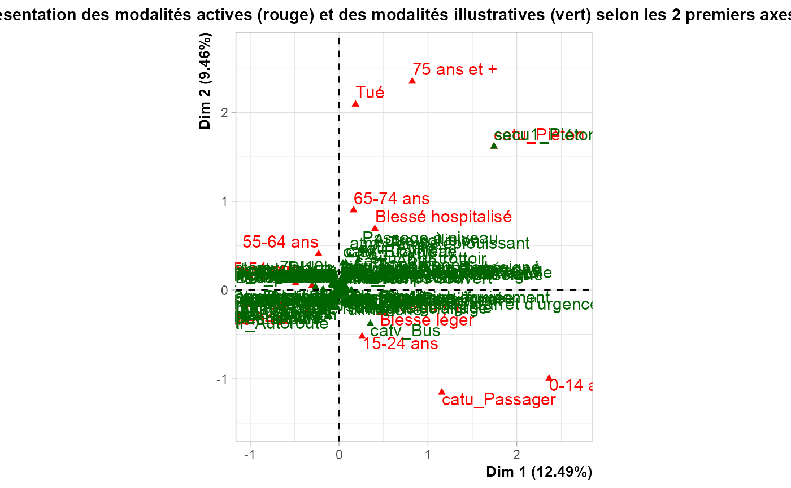
plot(res2.mca, invisible = c("ind","quali.sup"),
title = "Représentation des modalités actives selon les 2 premiers axes de l'ACM")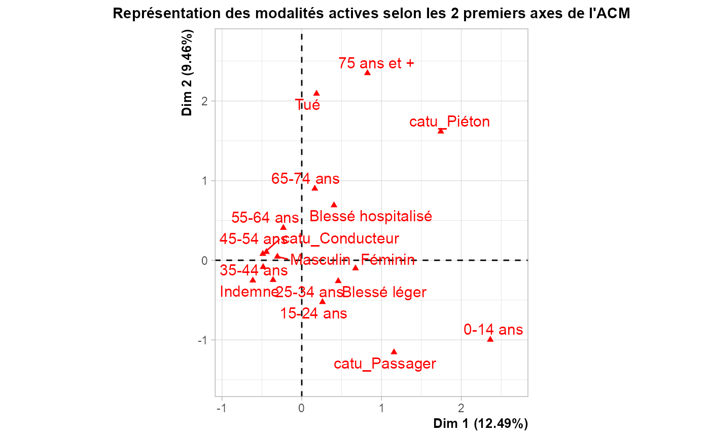
Sur l’axe 1: a) à gauche, plutôt des hommes, les classes d’âges intermédiaires (25-64 ans), conducteur et indemne b) à droite les âges extrêmes (moins de 15 ans ou 75 ans et plus), femmes, passagers ou piétons et blessés
Sur l’axe 2 : a) en haut : les personnes de plus de 75 ans / piéton / tué b) en bas : les personnes de moins de 25 ans / passager / blessé léger
plotellipses(res2.mca, keepvar = c("grav", "sexe", "catu", "classe_age"))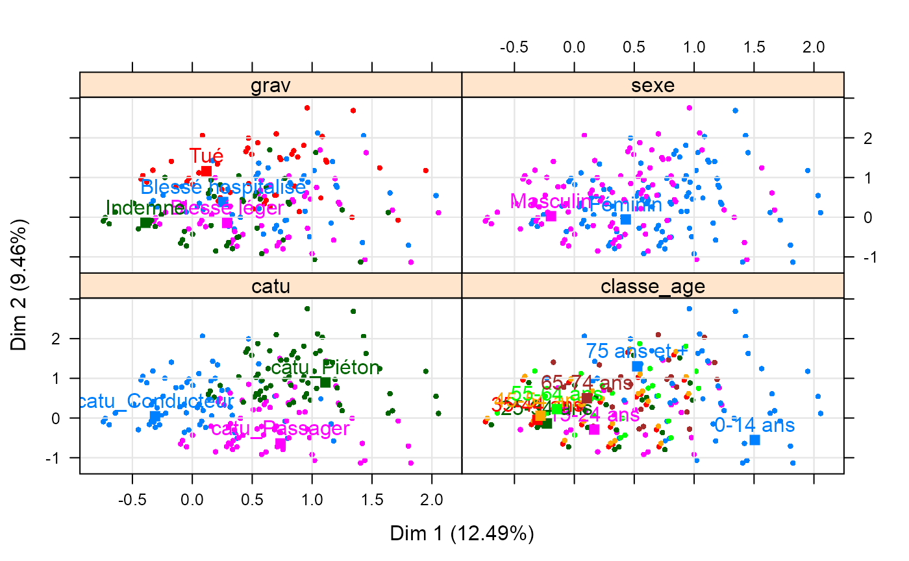 L’axe 1 distingue les hommes (à gauche) des femmes (à droite). De même, les conducteurs sont à gauche et les piétons à droite. L’axe 2 distingue les jeunes (en bas) des personnes âgées (en haut). Les jeunes sont plutôt des passagers, les classes d’âges intermédiaires des conducteurs et les personnes plus âgées des piétons.
Cette représentation graphique conforte les groupes mis en avant à l’étape précédente.
summary(res2.mca, nbelements=5, # nombre d'individus
ncp=2, # nombre de dimensions
nb.dec=2) ##
## Call:
## MCA(X = base, quali.sup = c(4:20, 22), level.ventil = 0)
##
##
## Eigenvalues
## Dim.1 Dim.2 Dim.3 Dim.4 Dim.5 Dim.6 Dim.7 Dim.8
## Variance 0.41 0.31 0.26 0.26 0.26 0.25 0.25 0.25
## % of var. 12.49 9.46 8.11 7.87 7.86 7.70 7.69 7.69
## Cumulative % of var. 12.49 21.95 30.06 37.93 45.79 53.50 61.19 68.88
## Dim.9 Dim.10 Dim.11 Dim.12 Dim.13
## Variance 0.25 0.24 0.21 0.18 0.13
## % of var. 7.56 7.43 6.50 5.55 4.09
## Cumulative % of var. 76.43 83.86 90.36 95.91 100.00
##
## Individuals (the 5 first)
## Dim.1 ctr cos2 Dim.2 ctr cos2
## 1 | 0.17 0.00 0.01 | 1.43 0.00 0.36 |
## 2 | -0.64 0.00 0.15 | 0.13 0.00 0.01 |
## 3 | -0.49 0.00 0.05 | 0.35 0.00 0.03 |
## 4 | 0.65 0.00 0.08 | 0.82 0.00 0.13 |
## 5 | -0.29 0.00 0.04 | 0.26 0.00 0.03 |
##
## Categories (the 5 first)
## Dim.1 ctr cos2 v.test Dim.2 ctr
## catu_Conducteur | -0.49 10.79 0.66 -563.39 | 0.08 0.39
## catu_Passager | 1.16 14.48 0.29 370.16 | -1.16 19.10
## catu_Piéton | 1.74 16.69 0.30 377.99 | 1.62 18.97
## Blessé hospitalisé | 0.40 2.05 0.04 141.79 | 0.69 7.91
## Blessé léger | 0.46 4.62 0.12 236.97 | -0.26 2.00
## cos2 v.test
## catu_Conducteur 0.02 92.62 |
## catu_Passager 0.28 -369.82 |
## catu_Piéton 0.26 350.58 |
## Blessé hospitalisé 0.12 242.26 |
## Blessé léger 0.04 -135.59 |
##
## Categorical variables (eta2)
## Dim.1 Dim.2
## catu | 0.68 0.47 |
## grav | 0.26 0.27 |
## sexe | 0.21 0.00 |
## classe_age | 0.47 0.48 |
##
## Supplementary categories (the 5 first)
## Dim.1 cos2 v.test Dim.2 cos2 v.test
## secu1_Aucun équipement | 0.14 0.00 17.22 | 0.00 0.00 -0.46 |
## secu1_Autre | -0.20 0.00 -46.26 | -0.19 0.00 -44.69 |
## secu1_Deux roues | -0.18 0.01 -58.78 | 0.01 0.00 2.14 |
## secu1_Piéton | 1.74 0.30 377.99 | 1.62 0.26 350.58 |
## secu1_Voiture | -0.18 0.05 -151.37 | -0.21 0.07 -178.17 |
##
## Supplementary categorical variables (eta2)
## Dim.1 Dim.2
## secu1 | 0.30 0.26 |
## catv | 0.02 0.01 |
## lum | 0.00 0.01 |
## agg | 0.00 0.00 |
## atm | 0.00 0.00 |Dans cette 3e ACM, on s’intéresse aux conditions de la route, météo et du véhicules
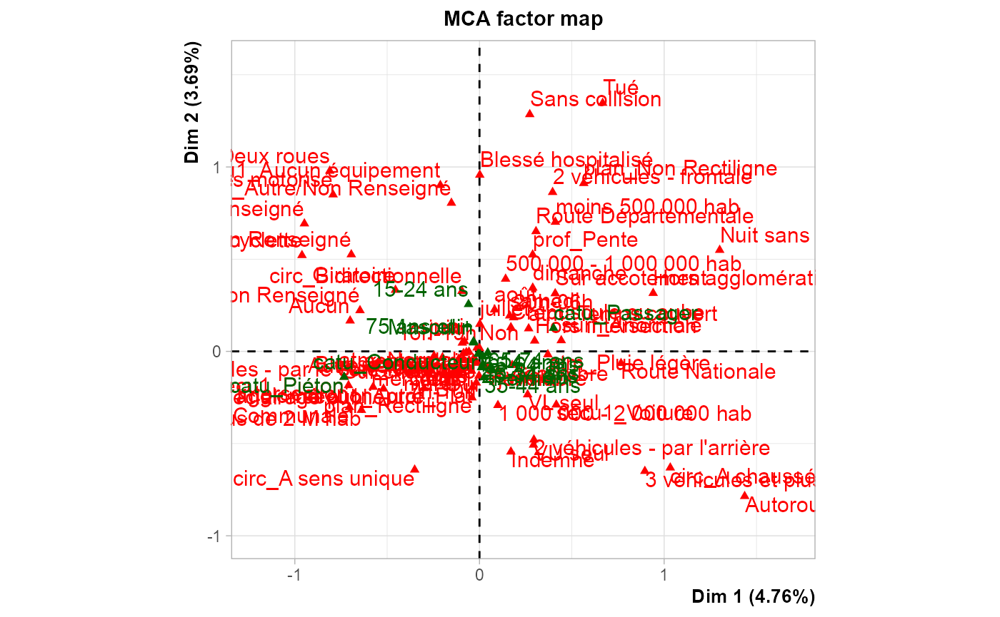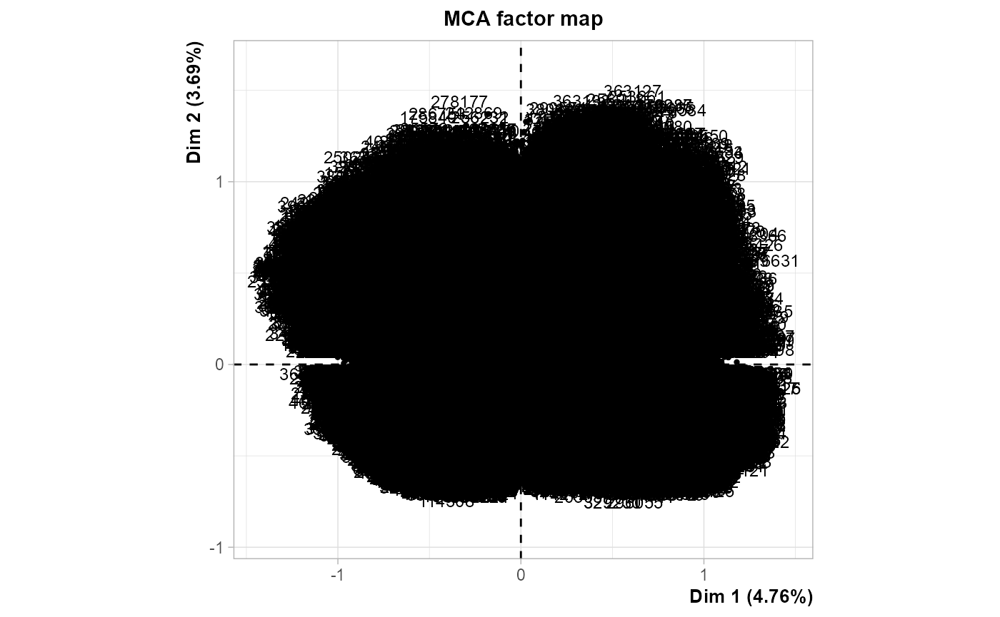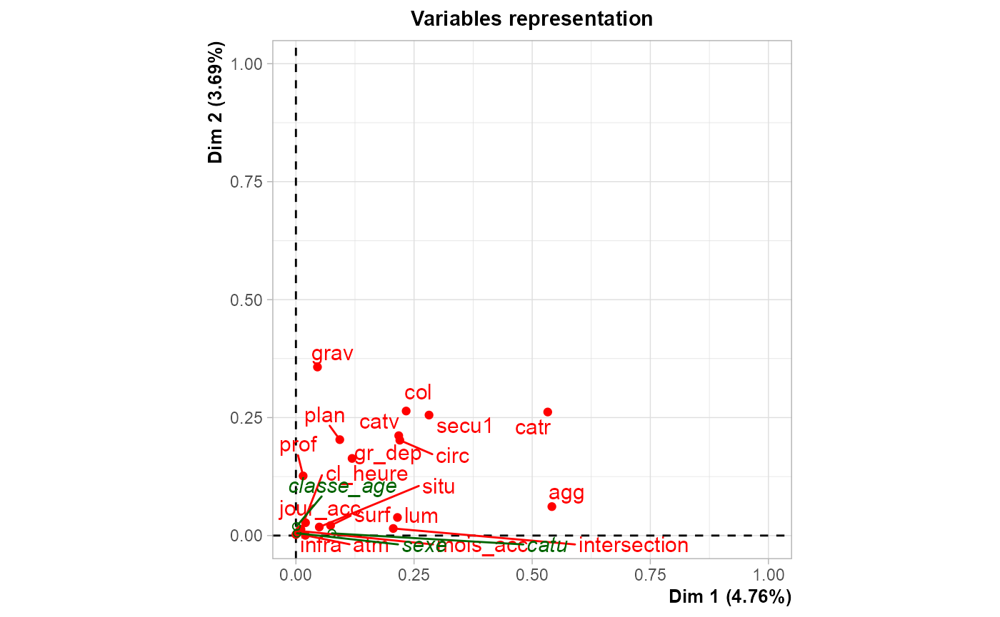
# toutes les modalités représentant moins de 2.5 % sont ventilées aléatoirement dans les autres modalités (les tués représentent 2,7 % des accidents, d'où le filtre à 2,5 % car on veut garder la modalité "tué")
# Tableau avec les poids
res3.mca$eig[,2]## dim 1 dim 2 dim 3 dim 4 dim 5 dim 6 dim 7 dim 8
## 4.7561154 3.6908366 3.4159381 3.3658771 3.0694867 2.6654387 2.6205095 2.1487533
## dim 9 dim 10 dim 11 dim 12 dim 13 dim 14 dim 15 dim 16
## 2.0225444 1.9929607 1.8799814 1.8525404 1.7591699 1.7240325 1.7141144 1.7023576
## dim 17 dim 18 dim 19 dim 20 dim 21 dim 22 dim 23 dim 24
## 1.6830890 1.6753196 1.6717494 1.6648258 1.6591717 1.6525281 1.6475668 1.6434987
## dim 25 dim 26 dim 27 dim 28 dim 29 dim 30 dim 31 dim 32
## 1.6419945 1.6403169 1.6373833 1.6317898 1.6295535 1.6231603 1.6167991 1.6087834
## dim 33 dim 34 dim 35 dim 36 dim 37 dim 38 dim 39 dim 40
## 1.5985961 1.5936779 1.5808232 1.5725291 1.5568754 1.5377423 1.5051536 1.4797262
## dim 41 dim 42 dim 43 dim 44 dim 45 dim 46 dim 47 dim 48
## 1.4494955 1.4036620 1.3721826 1.3467672 1.3109164 1.2855897 1.2378878 1.2124712
## dim 49 dim 50 dim 51 dim 52 dim 53 dim 54 dim 55 dim 56
## 1.1619377 1.1478800 1.1054554 1.0176463 0.9988303 0.9373521 0.8350335 0.7705683
## dim 57 dim 58 dim 59 dim 60 dim 61
## 0.6813880 0.5246155 0.4784896 0.3763916 0.2121290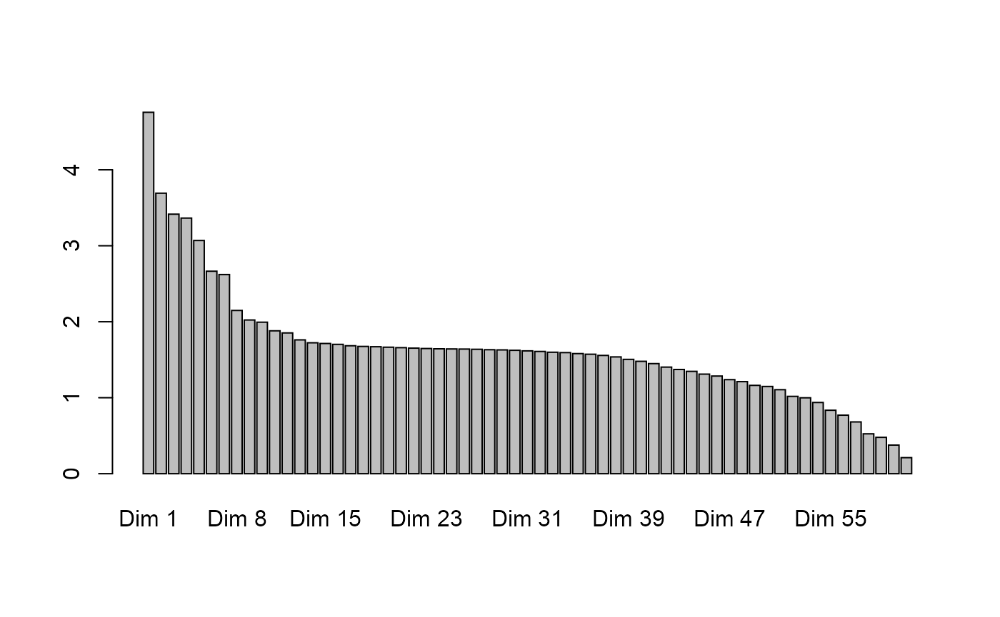
On garde 5 axes, soit 18.3 %.
plot(res3.mca, invisible = c("var","quali.sup"),
title = "Représentation des individus selon les 2 premiers axes de l'ACM")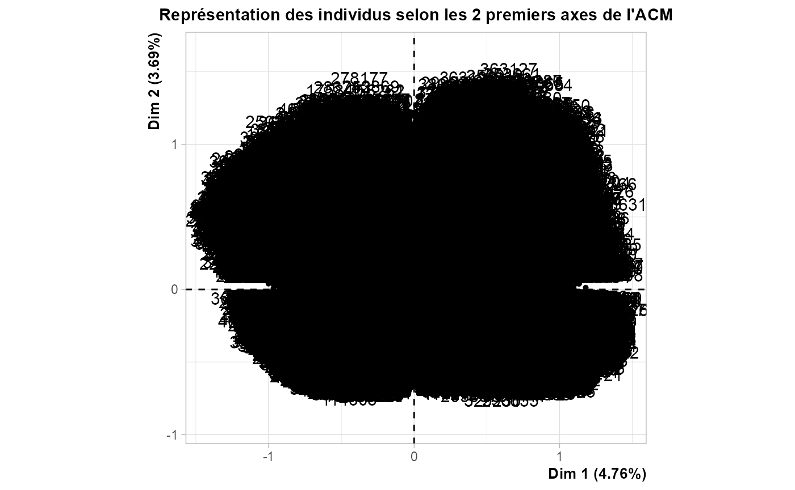
Vu le nb d’individus, pas d’intérêt car pas lisible
plot(res3.mca, invisible = c("var","quali.sup"),
habillage = "grav",
title = "Représentation des individus selon les modalités de la variable gravité")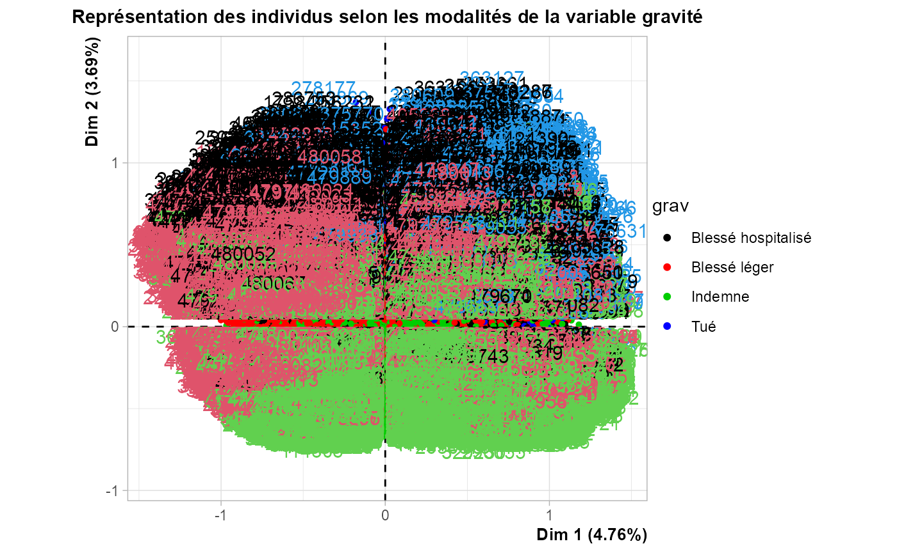
Sur l’axe 2, les personnes indemnes (en bas) se détachent des personnes tuées (en haut)
plot(res3.mca, invisible = "ind",
title = "Réprésentation des modalités actives (rouge) et des modalités illustratives (vert) selon les 2 premiers axes de l'ACM")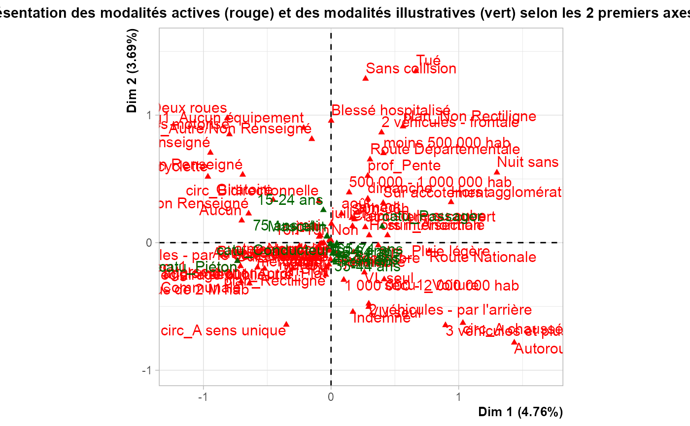
plot(res3.mca, invisible = c("ind","quali.sup"),
title = "Représentation des modalités actives selon les 2 premiers axes de l'ACM")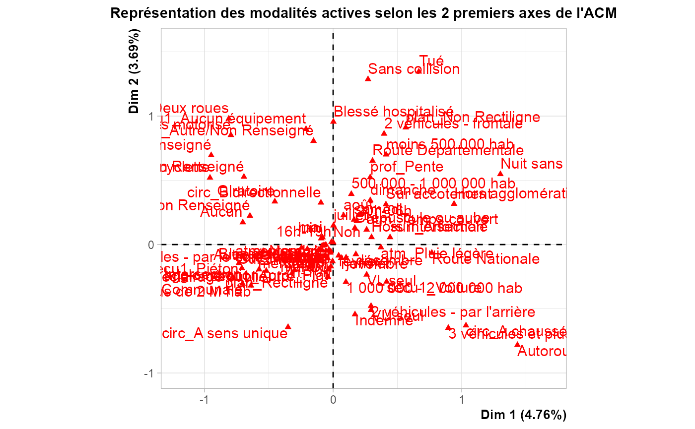
L’axe 1 est discriminant sur la catégorie de route : voie communale à gauche contre route nationale/autoroute à droite. De même, on a les accidents en agglomération à droite et ceux hors agglo à gauche (cohérent avec l’analyse précédente). Enfin, la luminosité conforte cette analyse : nuit avec éclairage (en agglo - à gauche) et nuit sans écalirage (hors agglo - à droite)
L’axe 2 distingue le profil : accidents en pente en haut et accident sur route “plate” en bas. De même, le régime de circulation explique cet axe : sens unique ou chaussées séparées en bas contre bidirectionnelle en haut. Enfin, on a une nette opposition entre les personnes indemnes en bas et les blessés/hospitalisés en haut.
#plotellipses(res3.mca, keepvar = c("grav", "catr", "agg", "secu1", "catv", "col", "plan"))
summary(res3.mca, nbelements=20, # nombre d'individus (permet aussi de voir la contribution de toutes les variables aux axes)
ncp=5, # nombre de dimensions
nb.dec=2) ##
## Call:
## MCA(X = base, quali.sup = c(1, 3, 21), level.ventil = 0.025)
##
##
## Eigenvalues
## Dim.1 Dim.2 Dim.3 Dim.4 Dim.5 Dim.6 Dim.7 Dim.8
## Variance 0.15 0.12 0.11 0.11 0.10 0.09 0.08 0.07
## % of var. 4.76 3.69 3.42 3.37 3.07 2.67 2.62 2.15
## Cumulative % of var. 4.76 8.45 11.86 15.23 18.30 20.96 23.58 25.73
## Dim.9 Dim.10 Dim.11 Dim.12 Dim.13 Dim.14 Dim.15 Dim.16
## Variance 0.06 0.06 0.06 0.06 0.06 0.06 0.06 0.05
## % of var. 2.02 1.99 1.88 1.85 1.76 1.72 1.71 1.70
## Cumulative % of var. 27.76 29.75 31.63 33.48 35.24 36.96 38.68 40.38
## Dim.17 Dim.18 Dim.19 Dim.20 Dim.21 Dim.22 Dim.23 Dim.24
## Variance 0.05 0.05 0.05 0.05 0.05 0.05 0.05 0.05
## % of var. 1.68 1.68 1.67 1.66 1.66 1.65 1.65 1.64
## Cumulative % of var. 42.06 43.74 45.41 47.08 48.73 50.39 52.03 53.68
## Dim.25 Dim.26 Dim.27 Dim.28 Dim.29 Dim.30 Dim.31 Dim.32
## Variance 0.05 0.05 0.05 0.05 0.05 0.05 0.05 0.05
## % of var. 1.64 1.64 1.64 1.63 1.63 1.62 1.62 1.61
## Cumulative % of var. 55.32 56.96 58.60 60.23 61.86 63.48 65.10 66.71
## Dim.33 Dim.34 Dim.35 Dim.36 Dim.37 Dim.38 Dim.39 Dim.40
## Variance 0.05 0.05 0.05 0.05 0.05 0.05 0.05 0.05
## % of var. 1.60 1.59 1.58 1.57 1.56 1.54 1.51 1.48
## Cumulative % of var. 68.31 69.90 71.48 73.05 74.61 76.15 77.65 79.13
## Dim.41 Dim.42 Dim.43 Dim.44 Dim.45 Dim.46 Dim.47 Dim.48
## Variance 0.05 0.05 0.04 0.04 0.04 0.04 0.04 0.04
## % of var. 1.45 1.40 1.37 1.35 1.31 1.29 1.24 1.21
## Cumulative % of var. 80.58 81.99 83.36 84.71 86.02 87.30 88.54 89.75
## Dim.49 Dim.50 Dim.51 Dim.52 Dim.53 Dim.54 Dim.55 Dim.56
## Variance 0.04 0.04 0.04 0.03 0.03 0.03 0.03 0.02
## % of var. 1.16 1.15 1.11 1.02 1.00 0.94 0.84 0.77
## Cumulative % of var. 90.91 92.06 93.17 94.19 95.18 96.12 96.96 97.73
## Dim.57 Dim.58 Dim.59 Dim.60 Dim.61
## Variance 0.02 0.02 0.02 0.01 0.01
## % of var. 0.68 0.52 0.48 0.38 0.21
## Cumulative % of var. 98.41 98.93 99.41 99.79 100.00
##
## Individuals (the 20 first)
## Dim.1 ctr cos2 Dim.2 ctr cos2 Dim.3
## 1 | 0.14 0.00 0.01 | 0.37 0.00 0.05 | -0.07
## 2 | 0.16 0.00 0.01 | 0.14 0.00 0.01 | -0.04
## 3 | -0.18 0.00 0.01 | -0.04 0.00 0.00 | -0.01
## 4 | -0.25 0.00 0.02 | 0.10 0.00 0.00 | -0.02
## 5 | -0.43 0.00 0.06 | 0.61 0.00 0.11 | -0.42
## 6 | -0.10 0.00 0.00 | 0.02 0.00 0.00 | -0.11
## 7 | -0.44 0.00 0.06 | 0.40 0.00 0.05 | -0.43
## 8 | -0.09 0.00 0.00 | -0.14 0.00 0.01 | -0.16
## 9 | -0.66 0.00 0.19 | -0.05 0.00 0.00 | -0.51
## 10 | -0.30 0.00 0.05 | -0.48 0.00 0.13 | -0.20
## 11 | 0.27 0.00 0.02 | 0.27 0.00 0.02 | 0.85
## 12 | 0.22 0.00 0.01 | 0.35 0.00 0.03 | 0.82
## 13 | 0.10 0.00 0.00 | 0.52 0.00 0.05 | 0.87
## 14 | -0.10 0.00 0.00 | 0.07 0.00 0.00 | 0.04
## 15 | -0.24 0.00 0.03 | -0.37 0.00 0.07 | 0.24
## 16 | -0.12 0.00 0.01 | 0.43 0.00 0.07 | -0.37
## 17 | -0.46 0.00 0.08 | 0.48 0.00 0.08 | -0.44
## 18 | -0.13 0.00 0.01 | -0.11 0.00 0.01 | -0.13
## 19 | -0.21 0.00 0.01 | -0.14 0.00 0.01 | -0.14
## 20 | -0.54 0.00 0.08 | 0.45 0.00 0.05 | -0.45
## ctr cos2 Dim.4 ctr cos2 Dim.5 ctr cos2
## 1 0.00 0.00 | 0.17 0.00 0.01 | -0.41 0.00 0.06
## 2 0.00 0.00 | 0.26 0.00 0.03 | -0.45 0.00 0.08
## 3 0.00 0.00 | 0.01 0.00 0.00 | -0.22 0.00 0.01
## 4 0.00 0.00 | -0.24 0.00 0.02 | -0.16 0.00 0.01
## 5 0.00 0.05 | -0.24 0.00 0.02 | 0.20 0.00 0.01
## 6 0.00 0.00 | 0.10 0.00 0.00 | -0.22 0.00 0.02
## 7 0.00 0.06 | -0.09 0.00 0.00 | -0.02 0.00 0.00
## 8 0.00 0.02 | 0.17 0.00 0.02 | -0.29 0.00 0.05
## 9 0.00 0.12 | -0.25 0.00 0.03 | 0.38 0.00 0.07
## 10 0.00 0.02 | 0.11 0.00 0.01 | -0.10 0.00 0.01
## 11 0.00 0.15 | -0.28 0.00 0.02 | -0.15 0.00 0.00
## 12 0.00 0.14 | -0.39 0.00 0.03 | -0.05 0.00 0.00
## 13 0.00 0.14 | -0.48 0.00 0.04 | -0.17 0.00 0.01
## 14 0.00 0.00 | -0.19 0.00 0.01 | -0.27 0.00 0.03
## 15 0.00 0.03 | -0.20 0.00 0.02 | -0.24 0.00 0.03
## 16 0.00 0.05 | -0.29 0.00 0.03 | 0.17 0.00 0.01
## 17 0.00 0.07 | -0.07 0.00 0.00 | -0.03 0.00 0.00
## 18 0.00 0.01 | 0.27 0.00 0.03 | -0.45 0.00 0.09
## 19 0.00 0.01 | 0.24 0.00 0.02 | -0.30 0.00 0.03
## 20 0.00 0.05 | -0.10 0.00 0.00 | 0.12 0.00 0.00
##
## 1 |
## 2 |
## 3 |
## 4 |
## 5 |
## 6 |
## 7 |
## 8 |
## 9 |
## 10 |
## 11 |
## 12 |
## 13 |
## 14 |
## 15 |
## 16 |
## 17 |
## 18 |
## 19 |
## 20 |
##
## Categories (the 20 first)
## Dim.1 ctr cos2 v.test Dim.2 ctr
## Blessé hospitalisé | 0.00 0.00 0.00 0.61 | 0.96 8.30
## Blessé léger | -0.25 0.75 0.03 -127.46 | -0.02 0.01
## Indemne | 0.17 0.41 0.02 98.26 | -0.54 5.40
## Tué | 0.67 0.42 0.01 77.27 | 1.35 2.19
## secu1_Aucun équipement | -0.21 0.05 0.00 -26.04 | 0.90 1.10
## secu1_Autre | -0.30 0.31 0.01 -68.82 | -0.20 0.18
## secu1_Deux roues | -0.81 4.13 0.15 -265.06 | 0.98 7.75
## secu1_Piéton | -0.73 1.65 0.05 -158.97 | -0.14 0.08
## secu1_Voiture | 0.42 3.57 0.26 352.29 | -0.29 2.23
## 2 roues motorisé | -0.79 4.39 0.16 -276.97 | 0.85 6.51
## Bicyclette | -0.96 1.28 0.04 -136.19 | 0.52 0.48
## VL seul | 0.26 1.64 0.16 275.14 | -0.23 1.70
## VU seul | 0.29 0.17 0.01 50.48 | -0.51 0.67
## Crépuscule ou aube | 0.17 0.06 0.00 30.54 | 0.13 0.05
## Nuit avec éclairage public | -0.52 1.43 0.05 -153.42 | -0.20 0.28
## Nuit sans éclairage | 1.30 5.74 0.18 297.76 | 0.55 1.32
## Plein jour | -0.09 0.17 0.02 -87.83 | -0.05 0.06
## En agglomération | -0.58 7.09 0.54 -510.04 | -0.19 1.03
## Hors agglomération | 0.94 11.58 0.54 510.04 | 0.32 1.68
## atm_Normale | -0.06 0.10 0.02 -97.41 | 0.00 0.00
## cos2 v.test Dim.3 ctr cos2 v.test
## Blessé hospitalisé 0.23 335.78 | -0.10 0.09 0.00 -33.58 |
## Blessé léger 0.00 -12.73 | -0.08 0.12 0.00 -43.80 |
## Indemne 0.21 -314.37 | 0.11 0.26 0.01 66.32 |
## Tué 0.05 156.01 | 0.10 0.01 0.00 11.83 |
## secu1_Aucun équipement 0.03 110.60 | 0.14 0.03 0.00 16.72 |
## secu1_Autre 0.00 -46.04 | 0.31 0.46 0.01 71.16 |
## secu1_Deux roues 0.21 319.96 | -0.77 5.17 0.13 -251.42 |
## secu1_Piéton 0.00 -30.14 | 0.46 0.89 0.02 98.90 |
## secu1_Voiture 0.13 -245.14 | 0.11 0.33 0.02 91.23 |
## 2 roues motorisé 0.18 296.98 | -0.65 4.15 0.11 -228.08 |
## Bicyclette 0.01 73.83 | -0.36 0.25 0.01 -50.73 |
## VL seul 0.13 -247.07 | 0.21 1.50 0.10 223.55 |
## VU seul 0.02 -87.50 | -0.02 0.00 0.00 -3.91 |
## Crépuscule ou aube 0.00 23.38 | 0.45 0.62 0.01 81.07 |
## Nuit avec éclairage public 0.01 -59.87 | 0.97 6.91 0.17 285.72 |
## Nuit sans éclairage 0.03 125.74 | 0.73 2.50 0.06 166.59 |
## Plein jour 0.00 -46.39 | -0.36 4.33 0.29 -370.99 |
## En agglomération 0.06 -171.22 | 0.10 0.27 0.01 84.56 |
## Hors agglomération 0.06 171.22 | -0.16 0.44 0.01 -84.56 |
## atm_Normale 0.00 -4.29 | -0.19 1.52 0.22 -327.72 |
## Dim.4 ctr cos2 v.test Dim.5 ctr
## Blessé hospitalisé -0.16 0.26 0.01 -56.55 | -0.02 0.00
## Blessé léger -0.30 1.61 0.05 -157.26 | 0.34 2.20
## Indemne 0.36 2.63 0.09 209.75 | -0.26 1.51
## Tué -0.26 0.09 0.00 -30.35 | -0.37 0.20
## secu1_Aucun équipement -0.23 0.08 0.00 -28.40 | -0.15 0.04
## secu1_Autre -0.05 0.01 0.00 -11.54 | -0.14 0.10
## secu1_Deux roues -0.58 3.01 0.08 -190.54 | 0.96 8.99
## secu1_Piéton -0.46 0.92 0.02 -99.62 | -0.57 1.56
## secu1_Voiture 0.27 2.06 0.11 224.99 | -0.18 1.00
## 2 roues motorisé -0.60 3.55 0.09 -209.57 | 0.90 8.79
## Bicyclette -0.08 0.01 0.00 -11.33 | -0.01 0.00
## VL seul 0.16 0.83 0.06 164.56 | -0.24 2.23
## VU seul 0.27 0.21 0.00 46.79 | -0.19 0.12
## Crépuscule ou aube -0.28 0.25 0.01 -50.95 | 0.03 0.00
## Nuit avec éclairage public -0.85 5.45 0.13 -251.86 | 0.21 0.35
## Nuit sans éclairage -0.55 1.44 0.03 -125.54 | 0.51 1.34
## Plein jour 0.30 2.93 0.19 302.63 | -0.12 0.54
## En agglomération -0.10 0.28 0.02 -85.08 | -0.16 0.80
## Hors agglomération 0.16 0.46 0.02 85.08 | 0.25 1.31
## atm_Normale 0.13 0.71 0.10 221.89 | 0.02 0.01
## cos2 v.test
## Blessé hospitalisé 0.00 -6.67 |
## Blessé léger 0.06 175.57 |
## Indemne 0.05 -151.62 |
## Tué 0.00 -42.74 |
## secu1_Aucun équipement 0.00 -18.33 |
## secu1_Autre 0.00 -31.25 |
## secu1_Deux roues 0.21 314.37 |
## secu1_Piéton 0.03 -124.27 |
## secu1_Voiture 0.05 -149.83 |
## 2 roues motorisé 0.21 314.74 |
## Bicyclette 0.00 -1.49 |
## VL seul 0.14 -257.99 |
## VU seul 0.00 -33.55 |
## Crépuscule ou aube 0.00 4.57 |
## Nuit avec éclairage public 0.01 60.72 |
## Nuit sans éclairage 0.03 115.63 |
## Plein jour 0.03 -123.67 |
## En agglomération 0.04 -137.92 |
## Hors agglomération 0.04 137.92 |
## atm_Normale 0.00 27.34 |
##
## Categorical variables (eta2)
## Dim.1 Dim.2 Dim.3 Dim.4 Dim.5
## grav | 0.05 0.36 0.01 0.09 0.07 |
## secu1 | 0.28 0.25 0.14 0.12 0.22 |
## catv | 0.22 0.21 0.12 0.09 0.21 |
## lum | 0.21 0.04 0.30 0.21 0.04 |
## agg | 0.54 0.06 0.01 0.02 0.04 |
## atm | 0.02 0.00 0.24 0.11 0.00 |
## col | 0.23 0.26 0.07 0.06 0.17 |
## intersection | 0.21 0.02 0.01 0.01 0.00 |
## mois_acc | 0.01 0.01 0.16 0.06 0.00 |
## jour_acc | 0.02 0.03 0.01 0.01 0.00 |
## catr | 0.53 0.26 0.02 0.02 0.29 |
## circ | 0.22 0.20 0.07 0.11 0.34 |
## prof | 0.02 0.13 0.12 0.24 0.08 |
## plan | 0.09 0.20 0.13 0.27 0.09 |
## surf | 0.07 0.02 0.43 0.39 0.12 |
## infra | 0.00 0.00 0.00 0.00 0.00 |
## situ | 0.05 0.02 0.05 0.07 0.03 |
## gr_dep | 0.12 0.16 0.00 0.03 0.11 |
## cl_heure | 0.01 0.01 0.17 0.14 0.05 |
##
## Supplementary categories
## Dim.1 cos2 v.test Dim.2 cos2 v.test
## catu_Conducteur | -0.01 0.00 -8.05 | -0.01 0.00 -15.47
## catu_Passager | 0.40 0.03 128.34 | 0.13 0.00 40.50
## catu_Piéton | -0.73 0.05 -158.97 | -0.14 0.00 -30.14
## Féminin | 0.07 0.00 33.93 | -0.10 0.00 -48.53
## Masculin | -0.03 0.00 -33.93 | 0.05 0.00 48.53
## 0-14 ans | 0.00 0.00 0.44 | -0.01 0.00 -2.53
## 15-24 ans | -0.06 0.00 -21.08 | 0.26 0.02 90.60
## 25-34 ans | 0.01 0.00 3.91 | -0.09 0.00 -31.53
## 35-44 ans | 0.03 0.00 7.72 | -0.14 0.00 -43.18
## 45-54 ans | 0.02 0.00 5.41 | -0.07 0.00 -19.87
## 55-64 ans | 0.02 0.00 4.70 | -0.03 0.00 -6.68
## 65-74 ans | 0.04 0.00 7.78 | -0.01 0.00 -1.12
## 75 ans et + | -0.03 0.00 -5.20 | 0.05 0.00 8.80
## Dim.3 cos2 v.test Dim.4 cos2 v.test
## catu_Conducteur | -0.08 0.02 -87.00 | 0.05 0.01 57.88
## catu_Passager | 0.08 0.00 26.82 | 0.02 0.00 7.48
## catu_Piéton | 0.46 0.02 98.90 | -0.46 0.02 -99.62
## Féminin | 0.08 0.00 35.12 | 0.07 0.00 30.96
## Masculin | -0.03 0.00 -35.12 | -0.03 0.00 -30.96
## 0-14 ans | 0.03 0.00 5.19 | 0.01 0.00 2.11
## 15-24 ans | 0.08 0.00 27.19 | -0.19 0.01 -65.92
## 25-34 ans | 0.03 0.00 9.24 | -0.08 0.00 -27.58
## 35-44 ans | -0.03 0.00 -10.02 | 0.02 0.00 7.50
## 45-54 ans | -0.08 0.00 -23.64 | 0.07 0.00 18.79
## 55-64 ans | -0.08 0.00 -17.67 | 0.13 0.00 29.75
## 65-74 ans | -0.02 0.00 -3.56 | 0.24 0.00 42.04
## 75 ans et + | 0.06 0.00 9.83 | 0.25 0.00 41.49
## Dim.5 cos2 v.test
## catu_Conducteur | 0.07 0.01 75.39 |
## catu_Passager | 0.02 0.00 5.64 |
## catu_Piéton | -0.57 0.03 -124.27 |
## Féminin | -0.17 0.01 -79.18 |
## Masculin | 0.08 0.01 79.18 |
## 0-14 ans | -0.25 0.00 -42.32 |
## 15-24 ans | 0.09 0.00 32.54 |
## 25-34 ans | 0.16 0.01 57.07 |
## 35-44 ans | 0.08 0.00 25.15 |
## 45-54 ans | 0.03 0.00 9.03 |
## 55-64 ans | -0.08 0.00 -18.34 |
## 65-74 ans | -0.33 0.01 -57.90 |
## 75 ans et + | -0.55 0.02 -89.60 |
##
## Supplementary categorical variables (eta2)
## Dim.1 Dim.2 Dim.3 Dim.4 Dim.5
## catu | 0.08 0.00 0.02 0.02 0.03 |
## sexe | 0.00 0.00 0.00 0.00 0.01 |
## classe_age | 0.00 0.02 0.00 0.02 0.03 |Etape 1 : on fait un Mclust avec 1 à 10 classes
mod_classif <- Mclust(base, G = 1:10)
mod_classif$BICOn constate que les meilleurs résultats sont pour les modèles EEV.
Etape 2 : on relance le mclust sur les modèles EEV uniquement et on teste de 1 à 10 classes
mod_classif <- Mclust(base, G = 1:10, modelNames = "EEV")
plot(1:10, abs(mod_classif$BIC), type='h') # pour afficher des BIC positifsOn retient 6 classes plutôt que 4 parce que ça minimise le BIC, et 6 plutôt que 10 car cela permet modèle plus parcimonieux et un nombre de classes plus facilement analysable.
## ----------------------------------------------------
## Gaussian finite mixture model fitted by EM algorithm
## ----------------------------------------------------
##
## Mclust EEV (ellipsoidal, equal volume and shape) model with 6 components:
##
## log-likelihood n df BIC ICL
## -12377866 480116 1545 -24775944 -24779402
##
## Clustering table:
## 1 2 3 4 5 6
## 34718 181552 117579 52820 39586 53861
# ajout des classes dans la base
base_comp <- cbind.data.frame(base,classe_mclust=as.factor(mod_classif$classification))
names(base_comp)## [1] "catu" "grav" "sexe" "secu1"
## [5] "catv" "lum" "agg" "atm"
## [9] "col" "intersection" "mois_acc" "jour_acc"
## [13] "catr" "circ" "prof" "plan"
## [17] "surf" "infra" "situ" "gr_dep"
## [21] "classe_age" "cl_heure" "classe_mclust"
res_mclust <- catdes(base_comp, num.var = 2) # on caractérise la variable "grav" (2e colonne dans la base)
lapply(res_mclust$category, function(.x) head(as.data.frame(.x), n=8))## $`Blessé hospitalisé`
## Cla/Mod Mod/Cla Global p.value v.test
## classe_mclust=5 35.68181 14.410471 8.245091 0 Inf
## classe_mclust=3 28.51274 34.202553 24.489707 0 Inf
## classe_age=75 ans et + 30.99654 7.961722 5.243941 0 Inf
## gr_dep=moins 500 000 hab 29.72862 21.345862 14.658957 0 Inf
## gr_dep=500 000 - 1 000 000 hab 25.26178 27.442639 22.178182 0 Inf
## plan=Non Rectiligne 29.23810 22.774156 15.902199 0 Inf
## circ=Bidirectionnelle 24.17390 71.522868 60.403527 0 Inf
## catr=Route Départementale 29.42932 50.206593 34.829291 0 Inf
##
## $`Blessé léger`
## Cla/Mod Mod/Cla Global p.value v.test
## classe_mclust=5 56.34568 12.950329 8.245091 0 Inf
## classe_mclust=3 41.46404 28.306093 24.489707 0 Inf
## classe_age=0-14 ans 50.03429 8.048887 5.770897 0 Inf
## gr_dep=plus de 2 M hab 42.46099 24.759195 20.918070 0 Inf
## circ=A sens unique 42.28941 20.814585 17.656775 0 Inf
## catr=Voie Communale 40.55460 50.955381 45.073899 0 Inf
## agg=En agglomération 38.78188 67.045026 62.017304 0 Inf
## catv=Bicyclette 57.15542 6.035939 3.788459 0 Inf
##
## $Indemne
## Cla/Mod Mod/Cla Global p.value v.test
## classe_mclust=2 57.67714 53.206170 37.814195 0 Inf
## situ=Sur chaussée 42.47904 80.163408 77.356722 0 Inf
## plan=Rectiligne 42.58874 78.549652 75.604229 0 Inf
## col=3 véhicules et plus 54.89421 17.216780 12.856476 0 Inf
## col=2 véhicules - par le côté 45.45559 32.059672 28.911346 0 Inf
## agg=En agglomération 43.25267 65.437889 62.017304 0 Inf
## catv=VU seul 59.34120 8.000183 5.526373 0 Inf
## catv=VL seul 49.15534 79.232043 66.073407 0 Inf
##
## $Tué
## Cla/Mod Mod/Cla Global p.value v.test
## classe_age=75 ans et + 8.694443 16.76881 5.243941 0 Inf
## gr_dep=moins 500 000 hab 5.112248 27.56243 14.658957 0 Inf
## plan=Non Rectiligne 5.041323 29.48522 15.902199 0 Inf
## circ=Bidirectionnelle 3.486123 77.44753 60.403527 0 Inf
## catr=Route Départementale 4.915053 62.96154 34.829291 0 Inf
## intersection=Hors intersection 3.305652 83.46101 68.647369 0 Inf
## agg=Hors agglomération 5.049325 70.53777 37.982696 0 Inf
## lum=Nuit sans éclairage 6.963995 25.20300 9.839914 0 InfIl y a une sur-représentation des personnes âgées de 75 ans et + : 31.0 % d’entre eux ont été blessés hospitalisés dans l’accident. Parmi les personnes blessées hospitalisées dans l’accident, 8.0 % sont des personnes de 75 ans et plus. Enfin, les personnes âgées de 75 ans et plus représentent 5.2 % des personnes accidentées. De même, il y a une sur-représentation des départements moins peuplés (29.7 % pour les moins de 500 000 hab contre 14.7% dans la base totale) Le lieu était plutôt une route départementale, non rectiligne avec une circulation bidirectionnelle.
Il y a une sur-représentation des personnes de moins de 15 ans : 50.0 % d’entre eux ont été blessés légers dans l’accident. Parmi les personnes blessées légers dans l’accident, 8.0 % sont des personnes de moins de 15 ans. Enfin, les personnes âgées de moins de 15 ans représentent 5.8 % des personnes accidentées. De même, il y a une sur-représentation des départements de plus de 2 millions d’habitants. Le lieu de l’accident était plus souvent une voie communale, en agglomération, sur une route à sens unique et le véhicule était un vélo.
Aucune catégorie d’usagers ne ressort. Ce sont plutôt des accidents avec plusieurs véhicules (2 ou plus), avec des véhicules utilitaires et en agglomération.
Comme pour les blessés hospitalisés, il y a une sur-reprsentation des personnes âgées de 75 ans et plus, dans des départements de moins de 500 000 habitants. Le lieu est caractérisé par une route départementale bidirectionnelle, non rectiligne, hors agglomération. Les accidents ont eu lieu la nuit sans éclairage.
res_mclust2 <- catdes(base_comp, num.var = 23) # on choisit la variable "classe"
lapply(res_mclust2$category, function(.x) head(as.data.frame(.x), n=10))## $`1`
## Cla/Mod Mod/Cla Global p.value v.test
## infra=Non 8.151054 98.018319 86.956486 0 Inf
## surf=Anormale 30.871856 77.982603 18.266002 0 Inf
## plan=Non Renseigné 13.717845 16.112679 8.493572 0 Inf
## plan=Non Rectiligne 25.185661 55.386255 15.902199 0 Inf
## prof=Pente 11.974745 24.091249 14.547943 0 Inf
## catr=Route Départementale 9.627977 46.373639 34.829291 0 Inf
## mois_acc=janvier 13.527411 14.093554 7.533804 0 Inf
## col=Sans collision 14.091204 11.267930 5.782353 0 Inf
## col=2 véhicules - frontale 11.961731 18.474567 11.168343 0 Inf
## atm=Temps éblouissant 26.419753 5.239357 1.434028 0 Inf
##
## $`2`
## Cla/Mod Mod/Cla Global p.value v.test
## infra=Non 42.47866 97.682758 86.956486 0 Inf
## surf=Normale 46.41182 95.528554 77.832232 0 Inf
## catr=Autoroute 48.10673 13.813673 10.858209 0 Inf
## intersection=Hors intersection 40.24461 73.059509 68.647369 0 Inf
## col=3 véhicules et plus 53.83469 18.303296 12.856476 0 Inf
## col=2 véhicules - par l'arrière 45.56604 15.798229 13.110582 0 Inf
## atm=Normale 46.69932 100.000000 80.973765 0 Inf
## agg=Hors agglomération 43.75113 43.946087 37.982696 0 Inf
## lum=Plein jour 39.64075 71.815238 68.506153 0 Inf
## catv=VU seul 50.52953 7.384661 5.526373 0 Inf
##
## $`3`
## Cla/Mod Mod/Cla Global p.value v.test
## classe_age=15-24 ans 30.39807 25.777562 20.767273 0 Inf
## gr_dep=plus de 2 M hab 30.18689 25.784366 20.918070 0 Inf
## infra=Non 27.40053 97.292033 86.956486 0 Inf
## surf=Normale 30.28406 96.247629 77.832232 0 Inf
## catr=Voie Communale 28.22644 51.951454 45.073899 0 Inf
## col=Sans collision 36.69404 8.663962 5.782353 0 Inf
## col=2 véhicules - par le côté 32.40519 38.255981 28.911346 0 Inf
## atm=Normale 30.24400 100.000000 80.973765 0 Inf
## agg=En agglomération 27.24152 68.985958 62.017304 0 Inf
## catv=Poids lourd 60.33220 4.695566 1.905998 0 Inf
##
## $`4`
## Cla/Mod Mod/Cla Global p.value
## infra=Oui 99.99432 99.9943203 11.0015080 0.000000e+00
## circ=A sens unique 14.88564 23.8905718 17.6567746 0.000000e+00
## intersection=Intersection 16.69026 40.8538432 26.9291171 0.000000e+00
## intersection=Giratoire 35.49543 9.9356304 3.0794641 0.000000e+00
## col=2 véhicules - par le côté 14.07844 36.9973495 28.9113464 0.000000e+00
## intersection=Passage à niveau 56.04900 0.6929193 0.1360088 2.080035e-173
## catr=Autoroute 14.67429 14.4831503 10.8582093 2.080882e-164
## catv=Tramway 50.79365 0.7269973 0.1574619 5.935163e-162
## plan=Non Rectiligne 13.84956 20.0189322 15.9021986 9.332328e-157
## circ=A chaussées séparées 13.73342 19.4093147 15.5483258 7.018627e-141
## v.test
## infra=Oui Inf
## circ=A sens unique Inf
## intersection=Intersection Inf
## intersection=Giratoire Inf
## col=2 véhicules - par le côté Inf
## intersection=Passage à niveau 28.07322
## catr=Autoroute 27.32604
## catv=Tramway 27.11865
## plan=Non Rectiligne 26.67439
## circ=A chaussées séparées 25.26891
##
## $`5`
## Cla/Mod Mod/Cla Global p.value v.test
## classe_age=75 ans et + 24.379394 15.50548 5.243941 0 Inf
## classe_age=0-14 ans 28.566788 19.99444 5.770897 0 Inf
## infra=Non 9.068916 95.64492 86.956486 0 Inf
## catr=Voie Communale 12.443683 68.02658 45.073899 0 Inf
## col=Autre collision 27.609739 94.33386 28.170900 0 Inf
## agg=En agglomération 12.109284 91.08271 62.017304 0 Inf
## secu1=Piéton 89.629889 96.96357 8.919719 0 Inf
## sexe=Féminin 12.778352 48.37316 31.212249 0 Inf
## grav=Blessé léger 12.950329 56.34568 35.873622 0 Inf
## grav=Blessé hospitalisé 14.410471 35.68181 20.415691 0 Inf
##
## $`6`
## Cla/Mod Mod/Cla Global p.value v.test
## infra=Non 12.90085 99.998143 86.956486 0 Inf
## surf=Anormale 48.47545 78.929095 18.266002 0 Inf
## plan=Rectiligne 14.74732 99.387312 75.604229 0 Inf
## mois_acc=décembre 17.91015 13.397449 8.391722 0 Inf
## mois_acc=novembre 18.24077 14.049126 8.640412 0 Inf
## mois_acc=janvier 21.01684 14.114109 7.533804 0 Inf
## atm=Temps éblouissant 45.15614 5.772266 1.434028 0 Inf
## atm=Temps couvert 47.62035 12.911012 3.041557 0 Inf
## atm=Pluie légère 48.68349 44.592562 10.275642 0 Inf
## atm=Pluie forte 47.53220 9.387126 2.215506 0 Infaccident en plein jour avec des conditions météo normales, sur une route “plate”, rectiligne sans pb sur la surface sur-représentation des autoroutes, hors intersection avec une collisions de 3 véhicules ou plus
très peu d’info sur le lieu et les conditions (modalités à autres ou non renseigné) route départementale
voiture + collision de 2 véhicules route à sens unique avec une infrastructure à une intersection/giratoire
durant l’hiver (nov, dec ou janv) conditions météo dégradées (vent/tempête, couvert ou pluie) + surface de la route anormale + absence d’infrastructure
mod_kmodes <- kmodes(as.matrix(base), 6) # on prend 6 classes comme ce que la classification a trouvé
summary(mod_kmodes)## Length Class Mode
## cluster 480116 -none- numeric
## size 6 table numeric
## modes 22 data.frame list
## withindiff 6 -none- numeric
## iterations 1 -none- numeric
## weighted 1 -none- logical
mod_kmodes$modes## catu grav sexe secu1 catv lum
## 1 Conducteur Indemne Masculin Voiture VL seul Plein jour
## 2 Conducteur Indemne Féminin Voiture VL seul Plein jour
## 3 Piéton Blessé léger Féminin Piéton VL seul Plein jour
## 4 Conducteur Blessé léger Masculin Voiture VL seul Plein jour
## 5 Conducteur Indemne Masculin Voiture VL seul Plein jour
## 6 Conducteur Blessé léger Masculin Deux roues 2 roues motorisé Plein jour
## agg atm col intersection
## 1 En agglomération Normale Autre collision Hors intersection
## 2 Hors agglomération Normale 2 véhicules - par le côté Hors intersection
## 3 En agglomération Normale Autre collision Hors intersection
## 4 En agglomération Normale 2 véhicules - par le côté Intersection
## 5 Hors agglomération Normale 2 véhicules - par le côté Hors intersection
## 6 En agglomération Normale 2 véhicules - par le côté Hors intersection
## mois_acc jour_acc catr circ prof plan
## 1 février jeudi Voie Communale Bidirectionnelle Plat Rectiligne
## 2 novembre mercredi Route Départementale Bidirectionnelle Plat Rectiligne
## 3 janvier mercredi Voie Communale Bidirectionnelle Plat Rectiligne
## 4 octobre mardi Voie Communale Bidirectionnelle Plat Rectiligne
## 5 mars vendredi Route Départementale Bidirectionnelle Plat Rectiligne
## 6 mai lundi Voie Communale Bidirectionnelle Plat Rectiligne
## surf infra situ gr_dep classe_age cl_heure
## 1 Normale Non Sur chaussée 1 000 000 - 2 000 000 hab 45-54 ans 7h-10h
## 2 Normale Non Sur chaussée 1 000 000 - 2 000 000 hab 25-34 ans 10h-15h
## 3 Normale Non Sur chaussée 1 000 000 - 2 000 000 hab 0-14 ans 16h-19h
## 4 Normale Non Sur chaussée plus de 2 M hab 25-34 ans 10h-15h
## 5 Normale Non Sur chaussée 500 000 - 1 000 000 hab 15-24 ans 16h-19h
## 6 Normale Non Sur chaussée 1 000 000 - 2 000 000 hab 15-24 ans 10h-15hblessé léger + conducteur + hommes + 15-24 ans + depmt entre 1 et 2 millions d’hab mardi + mars + 16h-19h 2 roues + nuit avec éclairage + en agglo + hors intersection + voie communale bidirectionnelle
blessé léger + conducteur + hommes + 35-44 ans + depmt entre 1 et 2 millions d’hab jeudi + septembre + 10h-15h voiture + plein jour + en agglo + hors intersection + voie communale bidirectionnelle
indemne + conducteur + femme + 45-54 ans + depmt entre 1 et 2 millions d’hab mardi + juillet + 16h-19h voiture + plein jour + en agglo + hors intersection + voie communale bidirectionnelle
blessé hospitalisé + conducteur + hommes + 25-34 ans + depmt de moins de 500 000 hab samedi + juillet + 20h-06h voiture + nuit sans éclairage + hors agglo + hors intersection + route départementale birectionnelle